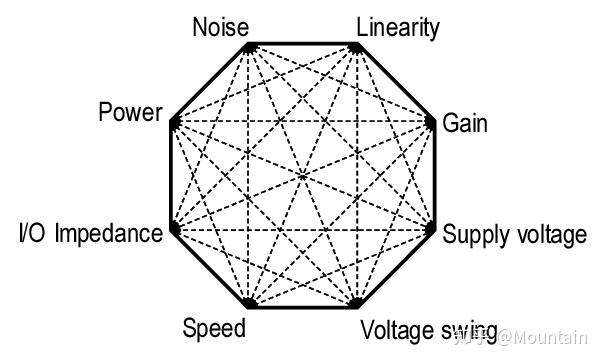

从电路结构出发，整理关键概念、分析方法与学习过程中的思考。
以下正文仅用于观察封面与阅读区域的衔接，不替代原文。
从问题开始
学习一项新的知识时，我更愿意先找到它想解决的问题，再沿着问题理解结构与方法。记录的意义，是将这些曾经模糊的关系整理成可以重新走过的路径。
封面负责建立第一印象。进入正文之后，视觉应当安静下来，让概念、推导和图表成为阅读的中心。图片的存在，不应该增加寻找标题与正文的成本。
从具体的问题出发，慢慢建立自己的理解。
建立结构与直觉
对于技术笔记，插图往往包含重要信息。正文中的电路图与公式应完整展示；文章封面则可以作为索引，帮助读者快速识别主题。

记录与回看
好的笔记并非一次写完。它会随着实践不断修订，也会在回看时带来新的线索。
✳ 阅读至此返回文章条目 ←